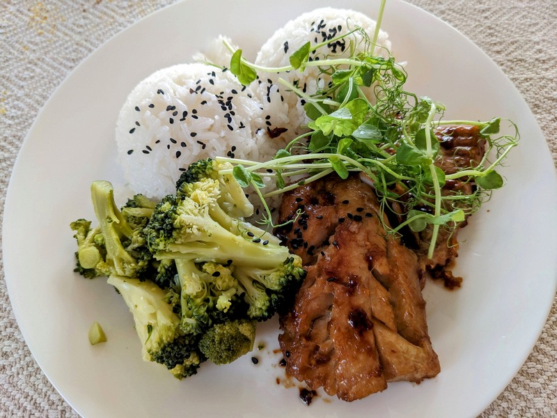

Další do sbírky mých aktuálně oblíbených receptů a asi už nikoho nepřekvapí, že je opět podle Milluji – mám pocit, že poslední dobou už skoro podle nikoho jiného nevařím :-) Tenhle recept má skvělý asijský vibe a moc nám chutnal. Potřebovat budete:
400g filetu z tresky
2 lžíce medu
2 lžíce rýžového octa
1 lžíci miso pasty
3 lžíce kvalitní sójové omáčky
2 stroužky česneku
1 lžičku čerstvého nastrouhaného zázvoru
1 lžíce ghí
160g brokolice
160g jasmínové rýže
černá sezamová semínka a microgreens k podávání
Na marinádu si smícháme med, ocet, miso, sójovou omáčku, prolisovaný česnek a zázvor. Filety osolíme z obou stran a marinujeme alespoň půl hodiny. Mezitím si dáme vařit rýži a brokolici si připravíme na páře. V pánvi si rozehřejeme ghí a marinované filety na něm opékáme z obou stran maximálně 3-4 minuty. V průběhu je můžeme stále polévat marinádou. Servírujeme s rýži a brokolicí, zasypané sezamovými semínky a microgreens.
